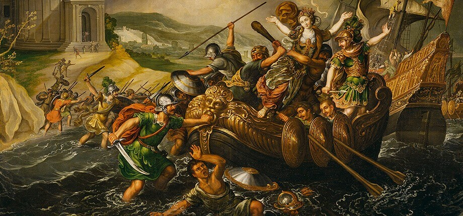
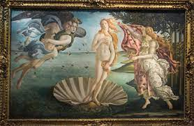

TEOGONIA DE HESIODO
La Teogonía es un poema didáctico e instructivo del siglo VIII a. C., atribuido al poeta griego Hesíodo. La Teogonía, al principio, no estaba realmente escrita, más bien, era parte de una rica tradición oral que solo alcanzó la forma escrita décadas más tarde. La Teogonía traza la historia del mundo desde su creación a través de la batalla entre los Olímpicos y los Titanes hasta la ascensión de Zeus como el gobernante absoluto de todos los dioses olímpicos; con el ascenso de Zeus a la supremacía y el nacimiento de sus muchos hijos, el poema termina pero no aborda las continuas luchas entre la humanidad y los dioses. Mucho de lo que se conoce hoy sobre la mitología griega primitiva proviene de la obra de Hesíodo y de otro gran poeta griego, Homero. En conjunto,las obras de ambos serían una gran influencia en la literatura y el drama griegos posteriores, y en la mitología romana, especialmente a través de las épicas Metamorfosis de Ovidio.
La Teogonía (del griego theogonia, que significa "las generaciones de los dioses") es un poema épico de 1.022 líneas de hexámetro que describe el nacimiento de los dioses en el panteón griego. Se cree que fue compuesto alrededor del 700 a. C. (más o menos una generación a cada extremo de esa fecha). Poco se sabe de la vida de Hesíodo, su padre emigró de Cime en Asia Menor y se estableció en Beocia, un pequeño estado en el centro de Grecia. Se asume que el poeta fue agricultor; un hecho extraído de los primeros versos de la Teogonía. También pudo haber sido un rapsodista, un recitador de poesía, de donde aprendió la técnica y el vocabulario de canciones heroicas. Aunque hay quienes se preguntan si realmente Hesiodo escribió la Teogonía, la mayoría de los clasicistas creen que sí. Sin embargo, algunas partes de la obra pueden haber sido agregadas por poetas posteriores y además hay una similitud concreta en algunos aspectos con la literatura mesopotámica anterior. La historiadora Dorothea Wender cree que la Teogonía fue una obra anterior a Trabajos y Días, la otra obra atribuida a Hesíodo y considera que este último es un trabajo superior, ya que la Teogonía al parecer estaría sin pulir y el autor podría haber tenido dificultades con la composición escrita. |
 |
